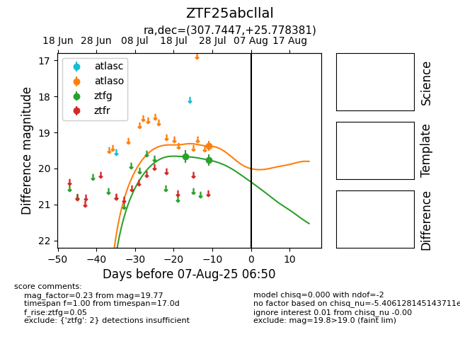

Target ZTF25abcllal at 2025-08-07 07:30, see:
FINK: fink-portal.org/ZTF25abcllal
Lasair: lasair-ztf.lsst.ac.uk/objects/ZTF25abcllal
ALeRCE: alerce.online/object/ZTF25abcllal
alt names
ZTF25abcllal (ztf,fink)
coordinates:
equatorial (ra, dec) = (307.7447,+25.77838)
galactic (l, b) = (67.3560,-7.98623)
photometry
last atlaso=19.38, ztfg=19.77
1 atlaso, 2 ztfg detections
